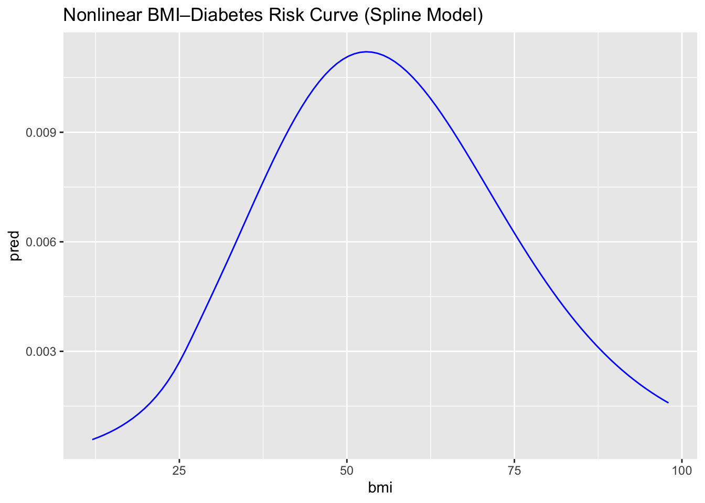

Research Questions
In this project we would like to focus on these three questions:
Which demographic, lifestyle, and clinical characteristics are
most strongly associated with diabetes?
How effectively can logistic regression models predict diabetes
status using only self-reported survey information?
Does model complexity like interaction terms improve predictive
performance?
Data Cleaning
4.1 Data source Our data source is from [Kaggle]
(https://www.kaggle.com/datasets/alexteboul/diabetes-health-indicators-dataset).
This dataset covers detailed health information on 253,680 survey
respondents from the CDC’s Behavioral Risk Factor Surveillance System
(BRFSS) 2015. It includes a wide range of attributes such as health
conditions, lifestyle behaviors, demographic information, and healthcare
access. The data was collected through telephone surveys conducted
across the United States. The original dataset is called
diabetes_binary_health_indicators_BRFSS2015.csv.
4.2 Data Cleaning Process The BRFSS dataset was
already well-maintained with minimal data quality issues. However, we
conducted several processing steps to make the data more readable and
analyzable:
- Variable name standardization: Converted all variable names to
snake_case format for consistency (e.g., HeartDiseaseorAttack to
heart_disease_or_attack);
- Data quality checks: Verified that there were no missing values or
duplicate observations in the dataset;
- Factor conversion: Converted all binary variables (0/1) to factors
with meaningful labels (e.g., “No”/“Yes” for health conditions,
“Female”/“Male” for sex, “No_Diabetes”/“Diabetes” for the outcome
variable) according to [dataset notebook] (https://www.kaggle.com/code/alexteboul/diabetes-health-indicators-dataset-notebook)
and [codebook] (https://www.cdc.gov/brfss/annual_data/2015/pdf/codebook15_llcp.pdf);
- Ordered factor creation: Created ordered factors for variables with
natural ordering (general health from Excellent to Poor, age groups from
18-24 to 80+, education and income levels);
- Feature engineering: Created interpretable new variables according
to [dataset notebook] (https://www.kaggle.com/code/alexteboul/diabetes-health-indicators-dataset-notebook)
and [codebook] (https://www.cdc.gov/brfss/annual_data/2015/pdf/codebook15_llcp.pdf):
- BMI Categories: Classified BMI into standard categories
(Underweight, Normal, Overweight, Obese);
- Mental Health Categories: Grouped days of poor mental health (None,
1-7 days, 8-14 days, 15-30 days);
- Physical Health Categories: Grouped days of poor physical health
using the same categorization;
- Health Risk Score: Created a composite score (0-7) summing major
health conditions plus normalized general health rating;
- Lifestyle Score: Calculated a score (0-3) based on physical
activity, fruit consumption, and vegetable consumption.
4.3 Train-Test Split To ensure robust model
evaluation, we split the data into training and testing sets: * Training
set: 202,944 observations (80%) - used for exploratory analysis and
model development; * Testing set: 50,736 observations (20%) - reserved
exclusively for final model evaluation; * Stratification method: Used
stratified random sampling to maintain the outcome distribution (13.5%
diabetes prevalence) in both sets; * Reproducibility: Set random seed to
123 to ensure consistent splits across all analyses.
4.4 Cleaned Dataset The cleaned dataset is tidy,
readable, and analyzable. It includes the following variables: Outcome
Variable: * diabetes_binary: Whether the individual has diabetes or
prediabetes (No_Diabetes, Diabetes). * Health Conditions: * high_bp:
High blood pressure diagnosis (No, Yes). * high_chol: High cholesterol
diagnosis (No, Yes). * stroke: History of stroke (No, Yes). *
heart_disease_or_attack: History of coronary heart disease or heart
attack (No, Yes). * chol_check: Had cholesterol check in past 5 years
(No, Yes).
Physical Metrics: * bmi: Body Mass Index (continuous numeric). *
bmi_category: BMI classification (Underweight, Normal, Overweight,
Obese). * diff_walk: Difficulty walking or climbing stairs (No,
Yes).
Lifestyle Behaviors: * smoker: Smoked at least 100 cigarettes in
lifetime (No, Yes). * phys_activity: Physical activity in past 30 days
(No, Yes). * fruits: Consume fruit 1+ times per day (No, Yes). *
veggies: Consume vegetables 1+ times per day (No, Yes).
hvy_alcohol_consump: Heavy alcohol consumption (No, Yes). Health Status:
* gen_hlth: General health rating (1-5: Excellent to Poor). * ment_hlth:
Days of poor mental health in past 30 days (0-30). * phys_hlth: Days of
poor physical health in past 30 days (0-30). * ment_hlth_cat: Mental
health categories (None, 1-7 days, 8-14 days, 15-30 days). *
phys_hlth_cat: Physical health categories (None, 1-7 days, 8-14 days,
15-30 days).
Healthcare Access: * any_healthcare: Have any healthcare coverage
(No, Yes). * no_docbc_cost: Could not see doctor due to cost (No,
Yes).
Demographics: * age: Age category (1-13). * age_cat: Age groups with
labels (18-24, 25-29, …, 80+). * sex: Biological sex (Female, Male). *
education: Education level (1-6). * education_cat: Education categories
(Never/K-8, Grades 9-11, Grade 12/GED, College 1-3 yrs, College 4+ yrs,
Unknown). * income: Income level (1-8). * income_cat: Income categories
(<$10k, $10k-$15k, …, $75k+).
Engineered Features: * health_risk_score: Composite health risk score
(0-7, higher indicates more risk factors). * lifestyle_score: Healthy
lifestyle score (0-3, higher indicates healthier behaviors).
Exploratory analysis
How EDA Refined Our Analysis Plan
The exploratory analysis informed and sharpened several key
components of our study design.
Prioritizing a focused and interpretable predictor
set
Although the BRFSS dataset includes hundreds of variables, the EDA
highlighted a core subset—BMI, age, income, and selected health
indicators—that demonstrated clear relevance to diabetes risk. These
findings guided our decision to concentrate on a parsimonious set of
predictors that balances model interpretability with predictive
performance, rather than relying on an overly high-dimensional feature
space.
Addressing class imbalance in model evaluation
The strong imbalance between diabetic and non-diabetic respondents
underscored the limitations of accuracy as a primary performance metric.
Based on this observation, we incorporated alternative evaluation
approaches such as AUC and precision–recall curves and considered the
need for class-balancing techniques (e.g., class weights or resampling)
in downstream modeling.
Clarifying the conceptual role of variables
EDA also helped us differentiate variables that are best suited for
descriptive characterization from those that function as meaningful
predictors of diabetes risk. For instance, general health scores showed
strong associations with diabetes status but represent downstream
consequences of underlying risk factors. As a result, we plan to use
such variables primarily for descriptive insight while emphasizing
upstream, behaviorally and demographically grounded predictors in our
modeling framework.
Additional Analysis
Fit Logistic Regression Models
Main Effects Model

Final Multivariable Logistic Regression Model for Diabetes
(JAMA/NEJM Style)
| Intercept |
0.06 |
0.06 (0.06, 0.06) |
<0.001 |
| BMI (per 1-unit increase) |
1.06 |
1.06 (1.06, 1.06) |
<0.001 |
| age_cat.L |
16.10 |
16.1 (13.96, 18.69) |
<0.001 |
| age_cat.Q |
0.44 |
0.44 (0.38, 0.51) |
<0.001 |
| age_cat.C |
0.75 |
0.75 (0.66, 0.86) |
<0.001 |
| age_cat^4 |
0.99 |
0.99 (0.87, 1.12) |
0.885 |
| age_cat^5 |
0.85 |
0.85 (0.75, 0.96) |
0.007 |
| age_cat^6 |
1.10 |
1.1 (0.98, 1.23) |
0.101 |
| age_cat^7 |
1.07 |
1.07 (0.97, 1.19) |
0.192 |
| age_cat^8 |
0.99 |
0.99 (0.9, 1.09) |
0.838 |
| age_cat^9 |
1.05 |
1.05 (0.97, 1.14) |
0.233 |
| age_cat^10 |
0.93 |
0.93 (0.87, 1) |
0.044 |
| age_cat^11 |
1.03 |
1.03 (0.97, 1.09) |
0.410 |
| age_cat^12 |
1.05 |
1.05 (1, 1.11) |
0.053 |
| High blood pressure (Yes vs No) |
2.30 |
2.3 (2.23, 2.37) |
<0.001 |
| gen_hlth_cat.L |
6.27 |
6.27 (5.94, 6.61) |
<0.001 |
| gen_hlth_cat.Q |
0.74 |
0.74 (0.71, 0.78) |
<0.001 |
| gen_hlth_cat.C |
0.91 |
0.91 (0.88, 0.95) |
<0.001 |
| gen_hlth_cat^4 |
1.01 |
1.01 (0.98, 1.04) |
0.408 |
| Male (vs Female) |
1.26 |
1.26 (1.22, 1.29) |
<0.001 |
To investigate the determinants of diabetes in this population, we
fitted a series of logistic regression models designed to evaluate main
effects, potential effect modification, nonlinear associations, and
cumulative health burden. Logistic regression is well suited for this
analysis because the outcome—presence of diabetes—is binary, and the
large sample size allows stable estimation of adjusted odds ratios
across multiple predictors. Each model was selected to answer a specific
analytic question and to refine our understanding of how demographic,
behavioral, and clinical variables influence diabetes risk.
The main-effects model served as the primary analytic framework and
included BMI, age, sex, general health, high blood pressure, high
cholesterol, smoking, physical activity, and socioeconomic factors. This
model identified the strongest independent predictors of diabetes.
Higher BMI, poorer self-rated general health, and hypertension were
among the most influential variables; each 1-unit increase in BMI raised
the odds of diabetes by approximately 6%, high blood pressure more than
doubled the odds, and poor general health increased the odds more than
six-fold. Men also demonstrated higher risk compared with women. This
model establishes the baseline pattern of adjusted associations and
forms the foundation for all subsequent analyses.
To assess effect modification by age, we fitted a BMI × age category
interaction model. Age may alter the metabolic consequences of
adiposity, and interaction terms allow the BMI slope to vary across age
groups. The model showed that BMI remained a significant predictor at
all ages, but its effect was stronger among older adults, suggesting
heightened metabolic susceptibility later in life. This model clarifies
that the BMI–diabetes relationship is not uniform across age
categories.
A more complex three-way interaction model examined whether the
relationship between BMI and diabetes differed jointly by physical
activity and high blood pressure. This analysis tested whether
behavioral and clinical factors interact multiplicatively to modify
risk. Although BMI and hypertension remained strong predictors, the
interaction terms were not statistically significant, indicating that
these risk factors operate largely independently. This model helps rule
out synergistic modification and reinforces conclusions from the
main-effects model. Recognizing that the association between BMI and
diabetes may be nonlinear, we fitted a restricted cubic spline model to
allow the BMI–risk curve to vary flexibly without imposing a linear
structure. The spline analysis revealed a slowly increasing risk at
lower BMI levels and a sharp escalation in risk across the overweight
and obese ranges. This model demonstrates that diabetes risk accelerates
nonlinearly with increasing adiposity and provides a more nuanced
understanding of the BMI–risk relationship.
To examine potential sex differences, we fitted a BMI × sex
interaction model. Physiologic and hormonal differences could plausibly
modify BMI’s effect; however, the interaction term was small and not
clinically meaningful. BMI had a similar effect in both sexes, although
male sex remained an independent predictor of higher risk. This model
shows that sex differences in diabetes risk arise from baseline
differences rather than differential BMI effects.
We further explored social determinants by fitting an income ×
general health interaction model. Although both lower income and poorer
general health independently increased diabetes risk, the interaction
terms were not statistically significant, indicating that income does
not materially alter the strength of the association between health
status and diabetes. This model suggests that socioeconomic and
health-status gradients contribute additively to risk.
Because psychological stress and activity levels may jointly
influence metabolic outcomes, we examined a mental health × physical
activity model. While poor mental health and inactivity were each
associated with higher diabetes risk, their interaction was not
significant, suggesting that physical activity does not strongly modify
the mental-health–diabetes relationship. This model highlights the
independent, rather than interactive, roles of psychosocial and
behavioral factors.
To capture overall chronic disease burden, we constructed a
multi-morbidity model using a composite health risk score. This model
demonstrated a strong dose–response pattern: each additional comorbidity
substantially increased diabetes risk. The model confirms that
cumulative health burden is a powerful predictor and provides an
efficient summary of cardiometabolic vulnerability.
Then, we conducted age-stratified logistic regressions to compare
predictors across younger and older adults. Stratification allowed us to
estimate separate models without relying on interaction terms. BMI and
high blood pressure were significant predictors in both strata, but
their effects were stronger among older adults. Poor self-rated health
remained a robust predictor across age groups. These models reinforce
earlier findings and highlight age-specific differences in
vulnerability.
Predictive model evaluation
To investigate the determinants of diabetes in this population, we
fitted a series of logistic regression models designed to evaluate main
effects, potential effect modification, nonlinear associations, and
cumulative health burden. Logistic regression is well suited for this
analysis because the outcome—presence of diabetes—is binary, and the
large sample size allows stable estimation of adjusted odds ratios
across multiple predictors. Each model was selected to answer a specific
analytic question and to refine our understanding of how demographic,
behavioral, and clinical variables influence diabetes risk. The
main-effects model served as the primary analytic framework and included
BMI, age, sex, general health, high blood pressure, high cholesterol,
smoking, physical activity, and socioeconomic factors. This model
identified the strongest independent predictors of diabetes. Higher BMI,
poorer self-rated general health, and hypertension were among the most
influential variables; each 1-unit increase in BMI raised the odds of
diabetes by approximately 6%, high blood pressure more than doubled the
odds, and poor general health increased the odds more than six-fold. Men
also demonstrated higher risk compared with women. This model
establishes the baseline pattern of adjusted associations and forms the
foundation for all subsequent analyses.
To assess effect modification by age, we fitted a BMI × age category
interaction model. Age may alter the metabolic consequences of
adiposity, and interaction terms allow the BMI slope to vary across age
groups. The model showed that BMI remained a significant predictor at
all ages, but its effect was stronger among older adults, suggesting
heightened metabolic susceptibility later in life. This model clarifies
that the BMI–diabetes relationship is not uniform across age
categories.
A more complex three-way interaction model examined whether the
relationship between BMI and diabetes differed jointly by physical
activity and high blood pressure. This analysis tested whether
behavioral and clinical factors interact multiplicatively to modify
risk. Although BMI and hypertension remained strong predictors, the
interaction terms were not statistically significant, indicating that
these risk factors operate largely independently. This model helps rule
out synergistic modification and reinforces conclusions from the
main-effects model.
Recognizing that the association between BMI and diabetes may be
nonlinear, we fitted a restricted cubic spline model to allow the
BMI–risk curve to vary flexibly without imposing a linear structure. The
spline analysis revealed a slowly increasing risk at lower BMI levels
and a sharp escalation in risk across the overweight and obese ranges.
This model demonstrates that diabetes risk accelerates nonlinearly with
increasing adiposity and provides a more nuanced understanding of the
BMI–risk relationship.
To examine potential sex differences, we fitted a BMI × sex
interaction model. Physiologic and hormonal differences could plausibly
modify BMI’s effect; however, the interaction term was small and not
clinically meaningful. BMI had a similar effect in both sexes, although
male sex remained an independent predictor of higher risk. This model
shows that sex differences in diabetes risk arise from baseline
differences rather than differential BMI effects.
We further explored social determinants by fitting an income ×
general health interaction model. Although both lower income and poorer
general health independently increased diabetes risk, the interaction
terms were not statistically significant, indicating that income does
not materially alter the strength of the association between health
status and diabetes. This model suggests that socioeconomic and
health-status gradients contribute additively to risk.
Because psychological stress and activity levels may jointly
influence metabolic outcomes, we examined a mental health × physical
activity model. While poor mental health and inactivity were each
associated with higher diabetes risk, their interaction was not
significant, suggesting that physical activity does not strongly modify
the mental-health–diabetes relationship. This model highlights the
independent, rather than interactive, roles of psychosocial and
behavioral factors.
To capture overall chronic disease burden, we constructed a
multi-morbidity model using a composite health risk score. This model
demonstrated a strong dose–response pattern: each additional comorbidity
substantially increased diabetes risk. The model confirms that
cumulative health burden is a powerful predictor and provides an
efficient summary of cardiometabolic vulnerability.
Then, we conducted age-stratified logistic regressions to compare
predictors across younger and older adults. Stratification allowed us to
estimate separate models without relying on interaction terms. BMI and
high blood pressure were significant predictors in both strata, but
their effects were stronger among older adults. Poor self-rated health
remained a robust predictor across age groups. These models reinforce
earlier findings and highlight age-specific differences in
vulnerability.


To assess the predictive validity of our logistic regression
framework, we conducted a comparative analysis of three candidate
models: a Main Effects model, a Subgroup model (BMI × Age), and a High
Interaction model. Receiver Operating Characteristic (ROC) analysis
revealed that increasing model complexity yielded negligible performance
gains. As illustrated in the ROC comparison, the curves for all three
models overlapped almost perfectly, indicating that the core demographic
and health variables predict diabetes risk independently rather than
through complex dependencies. Consequently, the Main Effects model was
selected for detailed evaluation due to its parsimony and
interpretability.
To optimize the model for use as a screening tool, we adjusted the
classification decision boundary using Youden’s J statistic, identifying
an optimal probability threshold of 0.141. Utilizing this threshold, we
generated a confusion matrix to evaluate the model’s performance on the
test set. The adjusted model achieved a sensitivity of 78.91%,
successfully identifying nearly four out of five positive diabetes
cases. The specificity was calculated at 67.93%, while the overall
accuracy stood at 69.61%. Although the lower threshold increased the
rate of false positives, this tradeoff was intentional to prioritize the
detection of at risk individuals.
Feature importance analysis, based on absolute log odds, identified
Age as the dominant predictor of diabetes risk, followed closely by self
reported General Health and BMI. Finally, the reliability of the model’s
risk estimates was assessed via a calibration curve. The results
demonstrated an excellent fit, with observed proportions closely
adhering to the predicted probabilities across the full range of risk
scores, confirming that the model provides statistically accurate
probability estimates.
Finally, to validate the accuracy of the probability estimates, we
examined the calibration curve for the main effects model. The analysis
demonstrated an excellent fit, with the observed proportions of diabetes
closely adhering to the predicted probabilities across the full range of
risk scores. The data points aligned tightly with the ideal 45 degree
diagonal line, indicating that the model provides statistically accurate
probability estimates. This confirms that the model is neither
overconfident nor underconfident, meaning that a predicted risk score
accurately reflects the actual prevalence of diabetes within that risk
group.
Discussion
Across all models, several consistent and quantitatively strong
findings emerged. BMI was one of the most influential predictors of
diabetes: each 1-unit increase was associated with a 6% higher odds of
diabetes (OR 1.06, 95% CI 1.06–1.06), and spline analyses revealed a
sharply increasing risk at higher BMI levels. High blood pressure also
demonstrated a substantial association, with individuals reporting
hypertension exhibiting more than double the odds of diabetes (OR 2.30,
95% CI 2.23–2.37). Self-reported general health displayed one of the
steepest gradients in the model; respondents who rated their health more
poorly experienced over a six-fold increase in diabetes odds compared
with those reporting excellent health (dominant contrast OR 6.27, 95% CI
5.94–6.61). Male sex likewise conferred moderately higher risk (OR 1.26,
95% CI 1.22–1.29). Age contributed a pronounced nonlinear effect,
reflected in a large positive linear contrast (OR 16.10, 95% CI
13.96–18.69) and inverse higher-order contrasts, indicating complex
curvature in the age–risk relationship.
Interaction and stratified analyses further clarified these
associations. The effects of BMI and high blood pressure were stronger
in older adults, suggesting increasing metabolic vulnerability with age.
In contrast, interactions involving physical activity, mental health,
income, and sex were small or non-significant, indicating that these
factors exert independent rather than modifying effects on diabetes
risk. The absence of strong interactions was consistent with
expectations, given the established primacy of adiposity and
cardiometabolic burden in diabetes etiology.
Taken together, these results show that cardiometabolic
factors—particularly BMI, hypertension, and perceived health
status—account for a substantial proportion of diabetes variation in
this population. The findings also suggest that aging amplifies
susceptibility to these risks, and that general health assessments may
serve as a simple yet powerful proxy for underlying metabolic burden.
Although lifestyle and psychosocial variables contributed modestly, they
did not alter the dominant influence of the main clinical predictors.
Overall, the consistency across model formulations reinforces the
central role of adiposity, blood pressure, age, and overall health
status as the key determinants of diabetes risk.
Our evaluation suggests that the BRFSS survey data serves as a robust
mechanism for early diabetes risk detection. The virtual identity of the
ROC curves across the Main Effects, Subgroup, and Interaction models
implies that risk factors in this population operate additively. For
public health implementations, this finding is significant as it
justifies the use of simpler, computationally efficient models without
sacrificing predictive power. Complex interaction terms, while
theoretically interesting, appear unnecessary for this specific
classification task.
A key insight from the feature importance analysis is the high
predictive value of self reported General Health. This subjective
variable (“How is your general health?”) ranked as the second most
powerful predictor, outperforming many objective measures. This suggests
that individuals often possess an acute awareness of their deteriorating
physiological state prior to formal diagnosis. Combined with Age and
BMI, this finding supports the feasibility of developing short form
screening questionnaires that can effectively filter high risk patients
before requiring resource intensive clinical testing.
Critically, the decision to tune the classification threshold to
0.141 reflects a strategic prioritization of sensitivity over precision.
While this adjustment resulted in a higher number of false positives
(12,467 false alarms compared to 5,539 true positives), this error
profile is acceptable for a preliminary screening tool. The cost of a
false positive, typically a follow up blood test (HbA1c), is minimal
compared to the long term morbidity and mortality associated with
undiagnosed diabetes. Furthermore, the strong calibration of the model
ensures that when a patient is flagged as high risk, the probability
score provided is a reliable reflection of their actual likelihood of
disease, thereby fostering clinical trust in the tool as a decision
support aid.
References
Centers for Disease Control and Prevention (CDC). (2024). National
Diabetes Statistics Report. U.S. Department of Health and Human
Services. https://www.cdc.gov/diabetes/php/data-research/index.html
Li, W., Peng, Y., & Peng, K. (2024). Diabetes prediction model based
on GA-XGBoost and stacking ensemble algorithm. PLOS ONE, 19(9),
e0311222. https://doi.org/10.1371/journal.pone.0311222 Parker, E.
D., Lin, J., Mahoney, T., Ume, N., Yang, G., Gabbay, R. A., ElSayed, N.
A., & Bannuru, R. R. (2024). Economic Costs of Diabetes in the U.S.
in 2022. Diabetes Care, 47(1), 26–43. https://doi.org/10.2337/dci23-0085